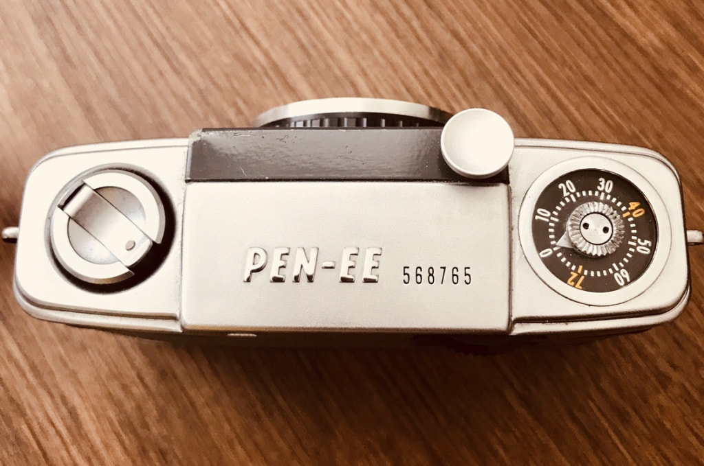

Reviewed by Natalie Smart, whose husband spotted this in a Brighton camera shop and immediately had to have it.

A few weeks ago my husband and I had a few days off work and decided to have a walk around the lanes in Brighton with our dog. I needed to pop to Zoing Image in Sydney Street for some Cinestill 800 film.
Whilst my husband is not really into photography, he always takes a keen interest in any camera I buy and had been extremely fascinated by my Olympus Pen FT. I think this is what led him to notice the Olympus Pen EE in the cabinet for sale. He was instantly drawn to the size and grey colour of the camera. Once I explained it was an automatic half frame camera he wanted to look at it in more detail — he absolutely loved the tiny viewfinder window and the feel of it in his hands. So we bought it along with some Kodak Colour Plus 200 and loaded it in the shop right there.
In some ways similar to the Olympus Trip — a red flasher will pop up in the viewfinder if the image is too bright or dull and it will not expose correctly. This took some getting used to for my husband as he tried to take several shots where this happened. The film number counts back from 72 to 0. The lens is a D Zuiko f/3.5 with a focal length of 28mm — 4 element design. I already knew the lens would be of excellent quality from my experience using Zuiko lenses on my Olympus Pen FT.
This review originally appeared on Natalie Smart's film photography blog. Read the full original post at nataliesmartfilmphotography.wordpress.com.
As an eBay Partner, I may earn a commission from qualifying purchases.